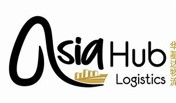

A fundamental shift in the way we produce and consume food is necessary.
ASIA FOOD HUB
Click HereThe Food Innovation Hubs Global Initiative strengthens global, regional and country-led innovation ecosystems to scale innovative solutions for food systems transformation through country and regional hubs.
The Initiative also drives insights on the latest frontiers in innovation through the Food Innovators Network (FIN).
FIN brings together the food systems innovation community including entrepreneurs, investors, private sector, policy experts, governments, technology experts, farmer organizations and thought leaders. FIN has two thematic working groups: